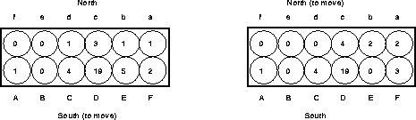
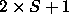

Awari is played on a board with 12 pits. Each of the two players owns half of the pits (see Figure 2). Initially, each pit contains 4 stones, so in total there are 48 (identical) stones. The goal of the game is to capture as many stones as possible. A player makes a move by selecting a non-empty pit owned by him or her and sowing all stones from this pit counter clockwise, dropping one stone in each consecutive pit. If the last pit to which a stone is added is owned by the opponent and now contains 2 or 3 stones, these stones are captured. If the preceding pit is also owned by the opponent and contains 2 or 3 stones, these are also captured, and the capture rule is applied recursively to this pit. An example is shown in the right part of Figure 2, where South captures 2 stones by sowing from Pit E. Additional rules exist, but these will not be discussed here.

Figure 2: Example board positions from awari. Player South
sows the 5 stones in Pit E and captures 2 stones from Pit d.
An endgame database for awari contains the game-theoretical value for all positions containing up to a maximum number of stones. Even though awari may look simple, its search space is enormous. For the entire game, the database would contain 1400 billion entries.
If the maximum number of stones is S, the game-theoretical value lies between -S and S, so there are  different values. Our program uses a minimal number of bits per entry to represent the game-theoretical value. For example, the 17-stones database uses 6 bits per entry. As there are 51,895,935 entries in this database, the disk space required to store it is about 38 Mbytes.
Our algorithm uses two additional fields per entry (see Figure 4). For awari, these two fields can be encoded with 3 additional bits. For the 17-stone database, we thus use 9 bits of internal memory for each position, or 57 Mbytes of total internal memory.
The sequential code of the program spends most of its time computing the unmove function and converting between positions and database addresses. The unmove function must compute, for a given position P, all possible positions that can lead to P through either a normal move or a capture move. In the latter case, the unmove function has to add stones to the board. The unmove function for awari is quite complicated, since the capture rules are complicated.
The address conversion routines must be able to determine the index in the database of a given position and vice versa. For this purpose, we use the simple Gödel coding scheme described in [1]. This scheme lexicographically orders all positions, based on the number of stones in each pit. The index (Gödel number) for a position is the number of positions preceding it in this ordering. This number can be computed using precalculated binomial coefficients. The inverse operation (determining a position from its index) can be done in a similar way.